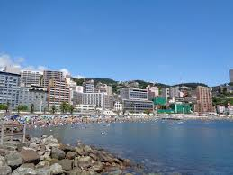
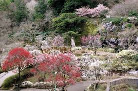
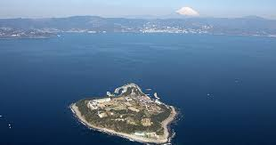

熱海サンビーチ

アクセス
JR熱海駅から徒歩約20分。または熱海駅から熱海港・紅葉ガ丘方面行きバスにて約5分→サンビーチ下車→
徒歩約3分からでも行くことができます。
概要
熱海サンビーチは、南国のような雰囲気で、海水浴や散歩、ライトアップされた夜景を楽しめる人気のビーチです。特に、夏にはウォーターパークも登場し、子供から大人まで楽しめます。また、熱海海上花火大会の会場としても知られ、花火の音響効果も楽しめます。
熱海梅園

アクセス
JR熱海駅から梅園・相の原方面行きバスで約15分→梅園バス停で下車し徒歩約2分。または、伊東線の来の宮駅より徒歩約10分。または、熱海駅よりタクシー約10分からでも行くことができます。
概要
明治19年に開園した日本一早咲きの梅で知られる梅園は、毎年11月中旬～12月上旬に第一号の梅の花が開きます。樹齢100年を越える梅の古木を含め、品種・469本の梅が咲き誇り、早咲き→中咲き→遅咲きと順番に開花していくので長期に渡り梅をお楽しみいただけます。
初島

アクセス
熱海港から定期船で30分。新幹線に乗れば、東京から熱海まで約40分、名古屋から熱海まで約90分。
概要
静岡県熱海市の沖合約10kmに浮かぶ、周囲約4kmの小さな島です。静岡県で唯一の有人島であります。亜熱帯の気候で、温暖な気候を利用したレジャーや、島ならではの自然、グルメ、歴史などを楽しむことができます。
- HOMEへ